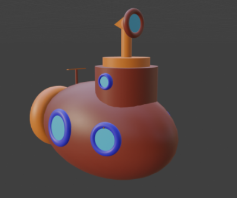
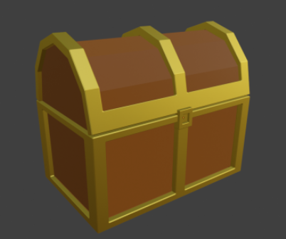
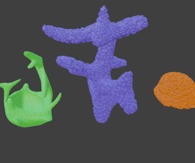

Meine Arbeiten:
Blender:
Im Fach Computergrafik bekommen wir jede Woche Aufgaben in Blender. Meine Lösungen werde Ich hier ausstellen.
| Ein U-Boot | Eine Schatzkiste | Ein paar Korallen |
|---|---|---|
|  |  |  |
Musik:
Da ich leider noch keine eigene Musik komponiert habe, hier ein Stück aus der Audio-Mediathek von Youtube
Coupe von The Grand Affair
Video:
In einem meiner Lieblings-VR-Spiele Blade and Sorcery gibt es einen Star Wars Mod, daher ist hier ein Video von mir in der Cantina.
Lied: Star Wars Theme/Cantina Band von Meco